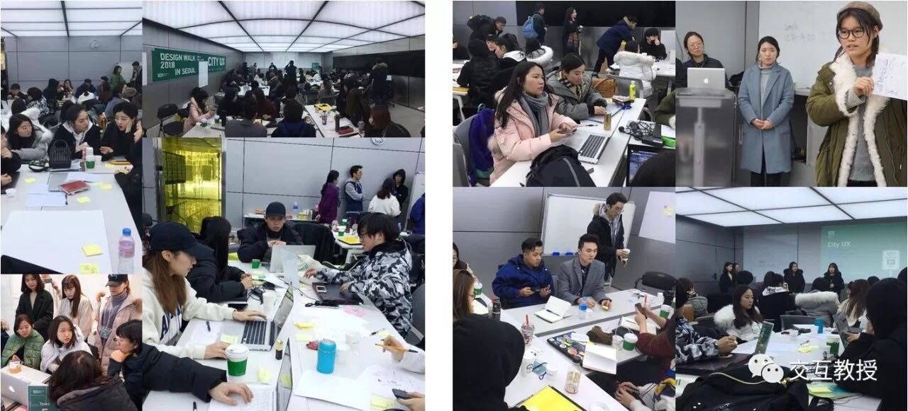

当前位置： 首页>> 主要完成人
当前位置： 首页>> 主要完成人
朱睿
发布时间：2014-03-12 12:56:44 浏览次数：0

朱睿老师参与大专业平台人才培养模式的相关研究与实践，参与了本项目设计的调研、完善，是本成果依据课题的秘书。
负责大专业平台人才培养模式文件起草和规章制度制定；负责大专业平台人才培养模式指标体系的制定；负责大专业平台人才培养模式信息的全面整理；负责大专业平台人才培养模式的具体组织与实施，负责校内大专业平台人才培养模式的具体联络与执行。在《高等教育研究》等杂志发表研究论文。
作为第五完成人，朱睿同志为本项目的实施和完善做出了重要贡献。